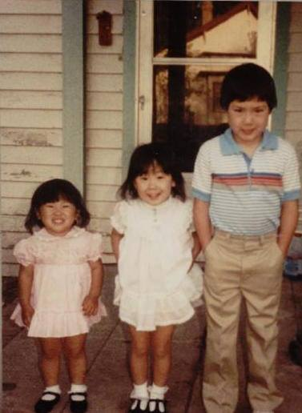

My name is Stacey Yoshimoto and I began my yoga journey a few years ago when a number of changes were taking place in my life. At the time, I often felt lost, anxious and overwhelmed. I went to yoga just to try it out, and I have been hooked ever since. It gave me a place to go where I could recenter and refocus my mind. During this transition time in my life I also became a crossfitter! I absolutely love crossfit and have found that the physical benefits of yoga complement my crossfit activities very well! Now, I want to share and help others to feel and experience the amazing benefits of yoga!
So several people have asked me what "Chibi" means and where I came up with the name. In Japanese, the term means small or short person. Being the youngest of three siblings, one of my nicknames growing up was Chibi, so I thought it was fitting for my yoga practice
